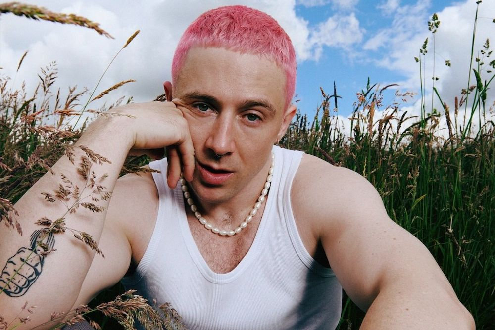
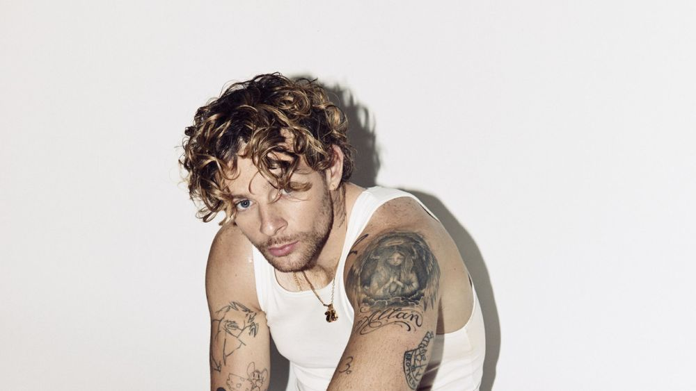
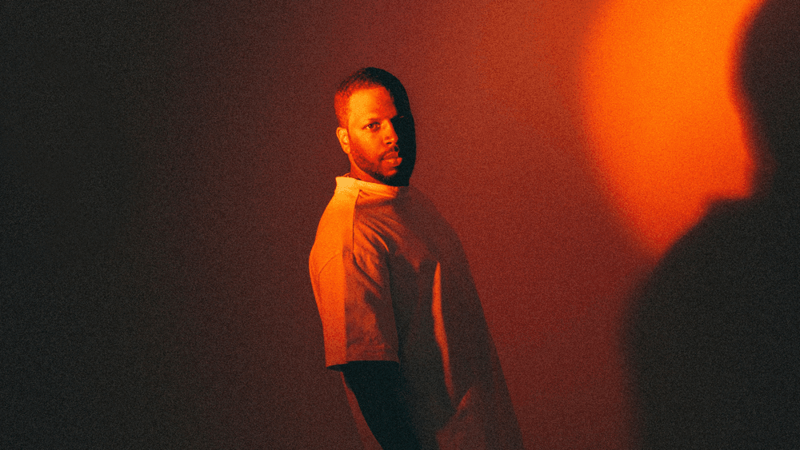

Prijs
€ 27,60 regular
€ 112 VIP Cherry Wine Meet & Greet Experience
Excl. € 4 (maand)/€ 25 (jaar) verplicht lidmaatschap
- 18:00 Doors VIP
- 19:00 Doors
- 19:30 Liang Lawrence
- 20:30 Grentperez
grentperez maakt charmante altpop, geïnspireerd door karaoke, vintage bossanova en moderne R&B. Aangemoedigd door zijn oudere broer en zus, groeide grentperez snel van virale YouTuber tot ontluikende bedroompop-ster. Nadat hij zijn songwritingkunsten had aangescherpt, werd zijn ontegenzeggelijk mooie debuutsingle 'Cherry Wine' een internationale sensatie.
Met meer dan 250 miljoen luisterbeurten op streamingplatforms, een multi-continentale tournee en opmerkelijke steun van smaakmakers als Triple J, NPR Music, MTV, KCRW, DIY, Wonderland en The Line of Best Fit staat grentperez aan de vooravond van iets groots. Redenen genoeg waarom wij enorm uitkijken naar zijn show in de MAX!
Onderdeel van
pop
Melkweg tipt
-

za 22 nov
Moncrieff
-

za 08 nov
Tom Grennan
-

wo 15 okt
Dinoo D'santiago
-
vr 07 nov
Malcom Todd